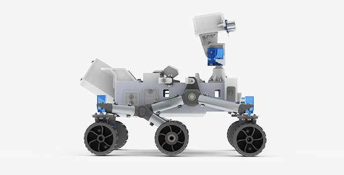

<!-- scroll-switcher.html -->
<!-- Custom Elements -->
<link rel="import" href="../iron-resizable-relay/iron-resizable-relay.html">

<dom-module id="scroll-switcher">
  <template>
    <style>
      :host {
        display: block;

        --horizontal-offset: 0px;
        --vertical-offset: 0px;
      }

      #mainWrapper {
        @apply --layout-vertical;
        @apply --layout-center;
        @apply --layout-center-justified;

        height: 100%;
        width: 100%;
        background: #f5f5f5;
      }

      #roverImage {
        width: 300px;
        transform: translateX(calc(0.7 * var(--horizontal-offset))) translateY(calc(0.7 * var(--vertical-offset)));
      }

      #headingWrapper {
        @apply --layout-vertical;
        @apply --layout-center;

        transform: translateX(calc(1 * var(--horizontal-offset))) translateY(calc(1 * var(--vertical-offset)));
        color: var(--dark-strong-alpha);
      }

      #mainHeading {
        font-size: 4rem;
        text-align: center;
      }

      #secondaryHeading {
        margin-top: -15px;
        font-size: 1.5rem;
        text-align: center;
      }

      .gap {
        height: 40px;
      }

      .view::slotted(*) {
        height: 100vh;
        width: 100vw;

        background: red;
      }

      #arrowDown {
        position: absolute;
        bottom: 20px;
        margin: auto;
        color: var(--dark-normal-alpha);

        transform: translateX(calc(0.3 * var(--horizontal-offset))) translateY(calc(0.3 * var(--vertical-offset)));

        --iron-icon-height: 40px;
        --iron-icon-width: var(--iron-icon-height);
      }

      .parallax {
        transition-property: transform;
        transition: 0.5s ease-out;
      }

    </style>

    <div id="mainWrapper">
      
      <div id="headingWrapper" class="parallax">
        <span id="mainHeading"><b>UCT</b> Mars Rover</span>
        <span id="secondaryHeading">An open Mars Curiosity Rover simulator.</span>
      </div>
      <div class="gap"></div>
      <iron-icon id="arrowDown" class="parallax" icon="site:down-double-chevron"></iron-icon>
    </div>
    <slot class="view" name="content"></slot>

    <iron-resizable-relay id="ironResizableRelay"></iron-resizable-relay>
  </template>
  <script src="scroll-switcher.js" charset="utf-8"></script>
</dom-module>
